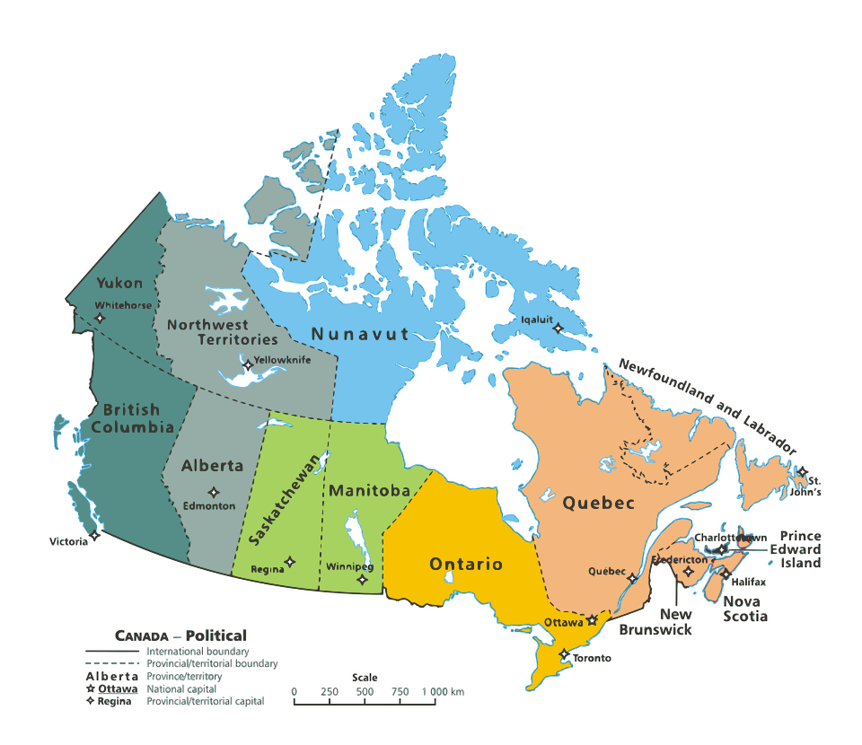

Menu
Angola
Brasil
Cuba
Canadá
Japão
Uruguai
Mapa do Canadá

Territórios do Noroeste
Clima
População
Altitude
Vegetação Predominante
Subártico e polar ou ártico
Aproximadamente 45 mil
Possuem uma altitude média que varia drasticamente entre as suas regiões, desde áreas próximas ao nível do mar no litoral ártico até picos montanhosos na cordilheira oeste.
Tundra e floresta boreal
fechar
Província de Ontário
Clima
População
Altitude
Vegetação Predominante
Continental úmido
Aproximadamente 16,2 milhões
Altitude provincial média de cerca de 245 metros
Florestas temperadas e Floresta Boreal
fechar
Província de Saskatchewan
Clima
População
Altitude
Vegetação Predominante
Continental Úmido
Aproximadamente 1,26 milhão de habitantes
Altitude média: 511 metros
Pradarias e Floresta Boreal
fechar
Território de Yukon
Clima
População
Altitude
Vegetação Predominante
Subártico
Aproximadamente 43 mil habitantes
Varia amplamente devido ao seu relevo montanhoso e planaltos, indo do nível do mar na costa ártica até 5.959 metros no Monte Logan
Floresta boreal
fechar
LOGOUT